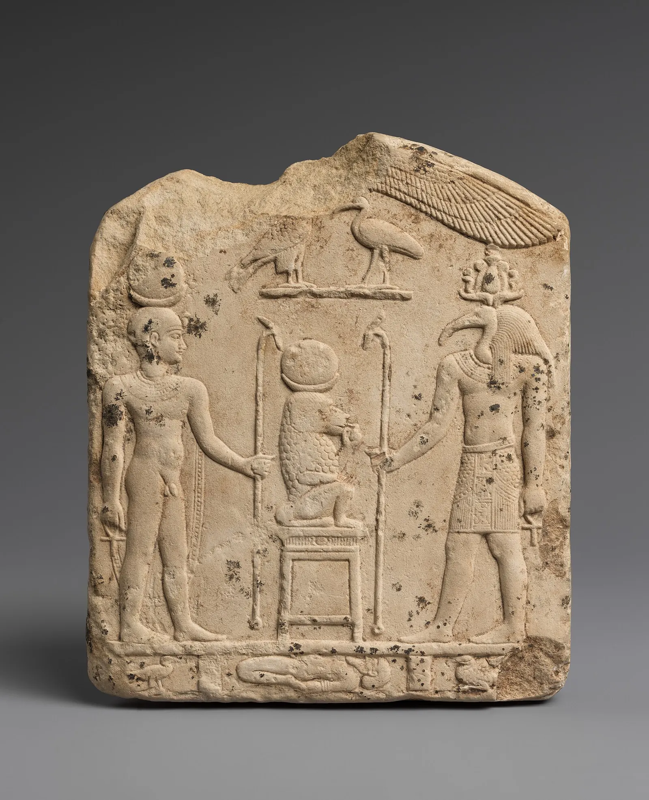
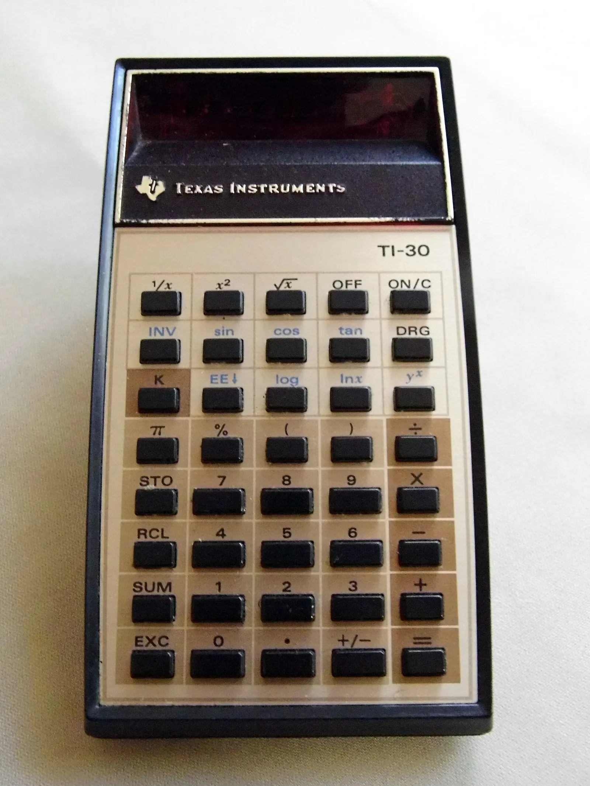

Средство для припоминания
Знание переехало в облако, нейросеть пишет эссе за пару секунд. Зачем тогда учиться?
«Отсюда иллюзия и дикое искушение: в принципе не нужно ничего изучать», — сказал студентам журналист Евгений Примаков. Почти 2400 лет назад Платон приписал похожий страх египетскому царю, только речь тогда шла о письменности. Мы проверили, чем нейросеть отличается от книги и есть ли у новой тревоги основания.
Фото на фоне: Victorgrigas / Wikimedia Commons, CC BY-SA 3.0

Проверьте себя
Не заглядывая в контакты, наберите номер близкого человека: мамы, брата, партнёра.
Набранные цифры остаются на этой странице и никуда не отправляются.
Вы справились. В опросе 2015 года это удалось далеко не всем.
Если не вспомнили, вы в большинстве.
«Лаборатория Касперского» опросила 6000 человек в шести странах Европы. Вот сколько из них не смогли назвать номер по памяти:
Исследователи назвали это «цифровой амнезией». С номерами телефонов это никому не мешает. Нейросети предлагают отдать им задачи посложнее.
Источник: Kaspersky Lab, 2015
Третий переход
Евгений Примаков много лет работал международным журналистом, руководил ближневосточным бюро НТВ и вёл «Международное обозрение» на «России 24». С 2020 года до апреля 2026-го он возглавлял Россотрудничество. Встречу со студентами он начал с практики: телевизор, по его словам, нужен медиапроекту, «чтобы что-то заякорить», а аудитория давно сидит в смартфоне. Потом перешёл к философии.
«Прямо сейчас, пока мы с вами разговариваем, мы проходим через очень важный фазовый переход — не функциональный, а фундаментальный».
Таких переходов, считает Примаков, в истории было три.
-
1
Человечество перенесло знание из устной традиции на внешний носитель.
-
2
Информацию научились тиражировать, и она стала общедоступной.
-
3
«Третий мы проходим сейчас: знание вынесено в облако».
Из этого он выводит главную опасность:
«Отсюда иллюзия и дикое искушение: в принципе не нужно ничего изучать, потому что всегда можно к этому обратиться».
Примаков не первый, кто так думает. Каждый из трёх переходов сопровождала похожая тревога. Мы прошли по ним по очереди, чтобы понять, сбывалась ли она раньше и чем отличается нынешний случай.
От глины до облака

.jpg){kind=link}



Царь и бог письма
Сократ в «Федре» рассказывает притчу. Египетский бог Тевт изобрёл число, счёт, геометрию, шашки и письмена и пришёл показать их царю Тамусу. Про письмо Тевт сказал, что оно сделает египтян «более мудрыми и памятливыми». Царь ответил так:
«В души научившихся им они вселят забывчивость, так как будет лишена упражнения память: припоминать станут извне, доверяясь письму, по посторонним знакам, а не изнутри, сами собою. Стало быть, ты нашел средство не для памяти, а для припоминания. Ты даешь ученикам мнимую, а не истинную мудрость. Они у тебя будут многое знать понаслышке, без обучения, и будут казаться многознающими, оставаясь в большинстве невеждами».
Этот фрагмент Примаков зачитал студентам почти дословно. Предупреждение против письма мы знаем только потому, что Платон его записал.
Последствия письма оказались другими, чем ждал Тамус. В 1963 году антрополог Джек Гуди и литературовед Ян Уотт описали, что происходит с обществом, когда оно начинает писать. В устной культуре предание незаметно подстраивается под настоящее: то, что перестало быть нужным, просто забывается. Записанный текст остаётся неизменным, его можно сравнить со старым и усомниться. Из этой возможности сомневаться, по мысли Гуди и Уотта, выросли греческая история и философия.
Книга, однако, хранит чужую мысль, а думать над ней приходится читателю. Нейросеть берёт на себя и эту часть работы. Поэтому вопрос, который задал Тамус, приходится задавать заново.
Что говорят исследования
Помним, где лежит
В 2011 году Бетси Спэрроу, Дженни Лю и Дэниел Вегнер опубликовали в Science серию из четырёх экспериментов. Если человек ожидает, что информация останется ему доступна, он хуже помнит саму информацию и лучше помнит, где её найти. В одном из опытов участники лучше запоминали, в какую папку на компьютере сохранили факт, чем сам факт. Авторы назвали интернет внешней памятью, на которую мы полагаемся так же, как на память друга или коллеги.
Эссе, которое не помнит автор
В июне 2025 года группа Натальи Космыны из MIT Media Lab выложила препринт под названием «Ваш мозг на ChatGPT». 54 студента и сотрудника пяти бостонских вузов писали короткие эссе за 20 минут. Одни работали с ChatGPT, другие с поисковиком, третьи без всего. Во время работы у них снимали ЭЭГ. Самая слабая связность мозговых сетей оказалась у группы с ChatGPT, самая сильная у тех, кто писал сам.
Сразу после первой сессии участников попросили процитировать собственное эссе.
83%
участников из группы ChatGPT не смогли процитировать эссе, которое написали несколько минут назад
С ChatGPT
С поисковиком
Без инструментов
Правильную цитату в группе ChatGPT не дал никто.
У исследования много ограничений, и авторы о них пишут сами. Это препринт, он не прошёл рецензирование. В итоговой, четвёртой сессии участвовали всего 18 человек; на это указал нейробиолог Адам Грин из Джорджтаунского университета. Педагогический психолог Гвидо Макрански из Копенгагенского университета заметил, что в жизни студенты работают с ИИ иначе, чем в лаборатории. Сама Космына в комментарии журналу Nature просила не делать вывода, что ChatGPT делает людей глупее: такого исследование не показывает.
Чем больше доверие, тем меньше проверки
Microsoft Research и Университет Карнеги — Меллон опросили 319 работников умственного труда, которые пользуются генеративным ИИ, и собрали 936 примеров из их работы. Статью представили на конференции CHI 2025. Чем больше человек доверял ИИ, тем реже он включал критическое мышление. Чем увереннее он был в собственных силах, тем чаще. Менялась и сама работа: по наблюдению авторов, критическое мышление сдвигалось к проверке ответов машины, их встраиванию в текст и контролю над задачей.
Нейролингвист Татьяна Черниговская делает из похожих данных жёсткий вывод. На марафоне «Знание.Наука» в октябре 2025 года она сказала:
«Есть уже немало исследований работы мозга, с применением как энцефалограмм, так и МРТ, которые наглядно показывают: передача существенной части интеллектуальной активности вовне, тем же нейросетям, приводит к стремительному ухудшению работы мозга и сбросу интеллектуальной активности».
Исследование MIT при этом пока остаётся препринтом на 54 участниках, а его авторы просят не читать его как доказательство отупения.
Калькулятор не убил математику

1986: год пикета
.jpg){kind=link}
3 апреля 1986 года у отеля «Шератон» в Вашингтоне учителя математики вышли с пикетом. Национальный совет учителей математики США (NCTM) призвал ввести калькулятор в школьную программу «на всех уровнях», в классе, дома и на контрольных. Против выступили около 15 человек по данным AP и около 20 по данным Washington Post, при нескольких тысячах участников съезда.
Их аргументы звучат знакомо.
«Риск в том, что, получив костыль, ты опираешься на него всё сильнее».
Исследования их опасений не подтвердили. В том же 1986 году Рэй Хембри и Дональд Дессарт свели вместе 79 исследований. Калькулятор в сочетании с обычным обучением улучшал навыки счёта на бумаге у среднего школьника. Исключением оказался четвёртый класс.
Блокнот Отто
Философы предлагают смотреть на такие инструменты как на часть самого мышления. В 1998 году Энди Кларк и Дэвид Чалмерс опубликовали статью «Расширенный разум». В ней две героини, Инга и Отто, идут в музей.
Инга
Помнит адрес музея.
Память: в голове
Отто
Страдает болезнью Альцгеймера и записывает всё в блокнот.
Память: в блокноте
По мысли авторов, блокнот играет для Отто ту же роль, что биологическая память для Инги, и вполне может считаться частью его разума. Если так, телефон с контактами ничего у нас не отнимает. Мы просто храним память в другом месте.
Калькулятор, правда, складывает числа, но не решает за ученика, какие числа складывать. Блокнот Отто помнит дорогу, но идёт в музей сам Отто. Нейросеть может сделать и то и другое.
Тем временем в аудитории
В 2025 году исследователи ВШЭ под руководством Ярослава Кузьминова выяснили, что ИИ в учёбе использовали 87% российских студентов. Главный вывод касался того, кто и как это делает.
87 из 100 российских студентов использовали ИИ в учёбе
Куда уходит сэкономленное время
«Главным открытием стала прямая связь между академическими результатами и использованием ИИ. Студенты с высокими оценками воспринимают технологию как экономию времени — освобождаются от рутины ради творческих задач. Студенты с низкими оценками просто списывают решения, никак не развивая тем самым свои способности».
Вузы ищут правила на ходу. В 2023 году выпускник РГГУ Александр Жадан рассказал, что защитил диплом, написанный с помощью ChatGPT. Университет тогда предложил ограничить доступ к чат-боту в образовании, но диплом у студента не отобрали. В ВШЭ сегодня общего запрета нет, но использование нейросети нужно декларировать. Если в выпускной работе найдут незаявленный сгенерированный текст, студента могут отчислить.
«Нет, не нравится»
Сам Примаков не делает вид, что смотрит на это спокойно. Он рассказал студентам старый анекдот про «новых русских»: один вживил себе телефон в ладонь, другой микрофон в зуб, а третий сидит молча, потому что у него «факс пошёл». По словам Примакова, анекдот предсказал, что человек сам станет носителем информации. И добавил:
«Нравится ли мне это как человеку пятидесяти лет? Нет, не нравится. Но придётся с этим жить».
Евгений Примаков
«Уже сейчас что-то пишут для Claude, для Perplexity — и наоборот, они уже пишут для нас».
Будущих журналистов эта фраза касается напрямую: часть текстов уже пишется для того, чтобы их прочитала и пересказала машина.
Фото: Japanexperterna / Wikimedia Commons, CC BY-SA 2.0
.jpg){kind=link}
Человек с чипом
Под конец Примаков предложил студентам мысленный эксперимент. Работодатель выбирает между двумя кандидатами, оба хорошо пишут, но у одного есть «аппаратные дополнительные возможности».
«Тексты у обоих одинаково хорошие, и вы не отличите, где человеческое начало: если бы вам не сказали, вы бы и не поняли».
Чип
«И я думаю, что работодатель будущего возьмёт человека с чипом в башке. Потому что это просто путь прогресса человеческой цивилизации: так ты растёшь по социально-экономической лестнице».
Голова
«Учиться нужно всегда, но не для того, чтобы забить голову информацией, которая и так есть в телефоне у каждого, а просто чтобы хорошо работала голова».
Письменность страх Тамуса пережила: если верить Гуди и Уотту, грамотность дала людям историю и философию. Но Тевт принёс царю средство для хранения памяти. Нейросеть выдаёт готовый ответ раньше, чем человек успел подумать. Работодатель Примакова выберет того, кто быстрее. Нынешним студентам предстоит выяснить, сумеют ли они остаться ещё и теми, кто думает сам.
Источники и авторы
Встреча
- Цитаты Евгения Примакова — расшифровка встречи со студентами, сверена с аудиозаписью.
- Биография: «Коммерсантъ», 27.04.2026; «Новая газета Европа», 27.04.2026.
Платон и теория медиа
- Платон. Федр, 274c–275b. Русский текст фрагмента; английский перевод, Perseus.
- Innis H. Empire and Communications. 1950. Описание.
- Goody J., Watt I. The Consequences of Literacy // Comparative Studies in Society and History. 1963. Vol. 5, № 3.
Таймлайн
Память и мышление
- Kaspersky Lab: Digital Amnesia, 2015.
- Sparrow B., Liu J., Wegner D. Google Effects on Memory // Science. 2011.
- Kosmyna N. et al. Your Brain on ChatGPT. arXiv, 2025 (препринт).
- Does Using ChatGPT Change Your Brain Activity? Study Sparks Debate // Scientific American / Nature, 2025.
- Lee H.-P. et al. The Impact of Generative AI on Critical Thinking // CHI 2025.
- Татьяна Черниговская на марафоне «Знание.Наука», Общество «Знание», 30.10.2025.
Калькулятор и расширенный разум
- The great calculator debate // Christian Science Monitor. 09.05.1986.
- О пикете 3 апреля 1986 года (Transum).
- Hembree R., Dessart D. Effects of Hand-Held Calculators in Precollege Mathematics Education: A Meta-Analysis // JRME. 1986.
- Clark A., Chalmers D. The Extended Mind // Analysis. 1998.
Российские вузы
- Нейросети разделили студентов на пользователей и потребителей, Институт образования НИУ ВШЭ, 05.08.2025.
- Правила использования ИИ, НИУ ВШЭ.
- «Медуза» о дипломе выпускника РГГУ, 15.03.2023; «Новая газета Европа», 01.02.2023.
Фото и видео
Все фотографии — из Wikimedia Commons, автор и лицензия указаны в подписи к каждому снимку. Серверы на обложке и в таймлайне: Victorgrigas, CC BY-SA 3.0. Табличка из Урука: Osama Shukir Muhammed Amin, CC BY-SA 4.0. Платон: Marie-Lan Nguyen, общественное достояние. Библия Гутенберга: NYC Wanderer (Kevin Eng), CC BY-SA 2.0. ENIAC: армия США, общественное достояние. Стела с Тотом: Метрополитен-музей, CC0. Калькулятор TI-30: Joe Haupt, CC BY-SA 2.0. Смартфон в темноте: Japanexperterna, CC BY-SA 2.0. Видео встроены с YouTube: TIME; канал «Искусство жить». Анимации и графики построены по данным из источников выше.